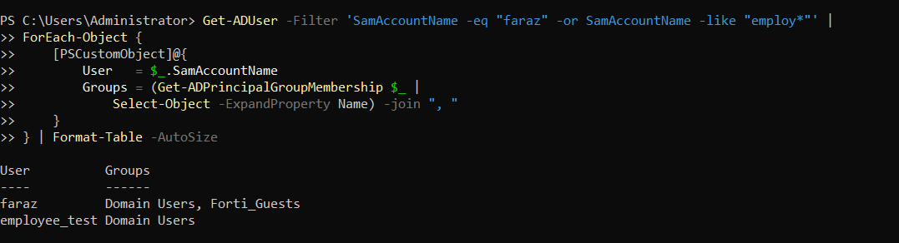
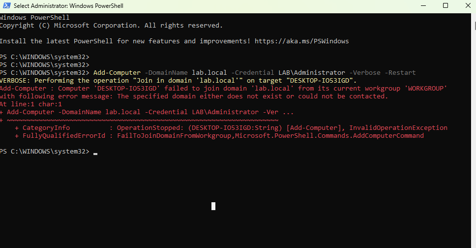
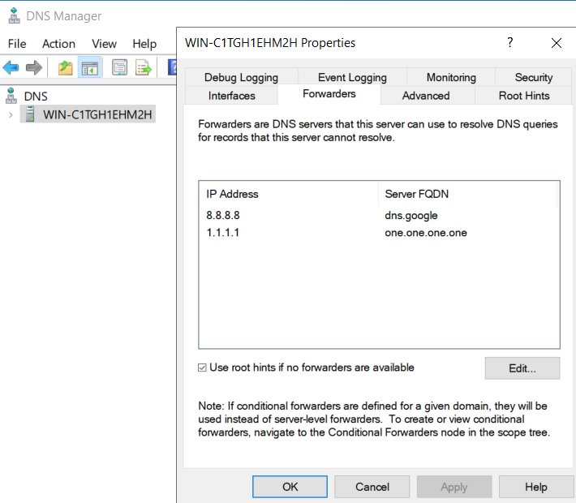
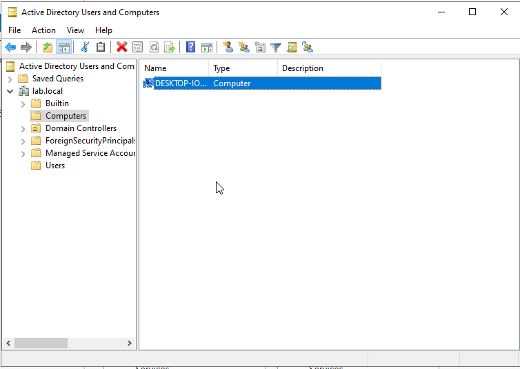
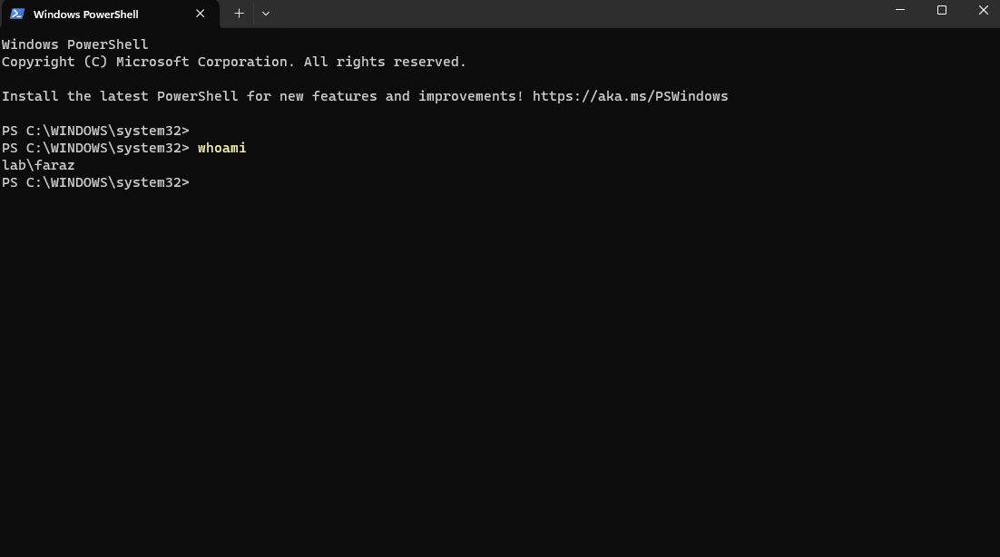
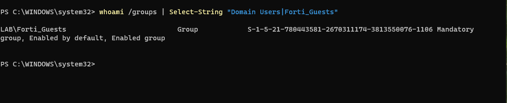

Problem statement
Restore a Windows 11 client to a usable domain-authenticated state.
The client could reach the domain controller by IP address, but domain operations continued to fail. The objective was to determine why the Active Directory control plane remained unhealthy even though Layer 3 reachability was present, then recover the client without rebuilding the domain controller.
Identity design
The lab uses two AD identities so later FortiGate FSSO policies can enforce different outcomes. faraz belongs to Domain Users and Forti_Guests. employee_test belongs only to Domain Users.


Failure state
The client had a broken domain trust relationship. Initial repair attempts failed. A successful ping to the DC was not enough: Active Directory also depends on DNS host records, LDAP SRV records, and a healthy machine-account relationship.

Troubleshooting method
- Validated that the domain controller was healthy enough to continue rather than rebuilding it.
- Separated ICMP reachability from DNS-driven AD service discovery.
- Restricted client DNS to the domain controller at 192.168.1.96 and temporarily removed IPv6 router-DNS interference from the test path.
- Deleted the stale client machine object from the AD Computers container.
- Verified DNS and domain-controller discovery before rejoining lab.local.


Remediation sequence
- Return the client to WORKGROUP.
- Delete the stale DESKTOP-IO53IGD machine object in ADUC.
- Configure the client to use only the DC for DNS.
- Clear cached DNS state and verify the AD DNS records.
- Rejoin the domain using LAB\Administrator credentials.
- Log in as LAB\faraz and validate the active token.


Root-cause interpretation
The evidence supports a conservative conclusion: DNS and domain-controller discovery problems, combined with stale machine-account state, were likely contributing factors. The recovery sequence removed both conditions and restored domain authentication. The report deliberately avoids claiming that a single isolated fault was proven as the only cause.
Operational interpretation
- A successful ping does not prove that Active Directory is healthy.
- AD clients rely on DNS SRV records to locate services such as LDAP.
- Domain clients should query the AD DNS server rather than bypass it with public resolvers.
- Secure-channel failures require attention to identity state as well as transport reachability.
- The recovered identity design is ready for a later FortiGate FSSO policy lab.